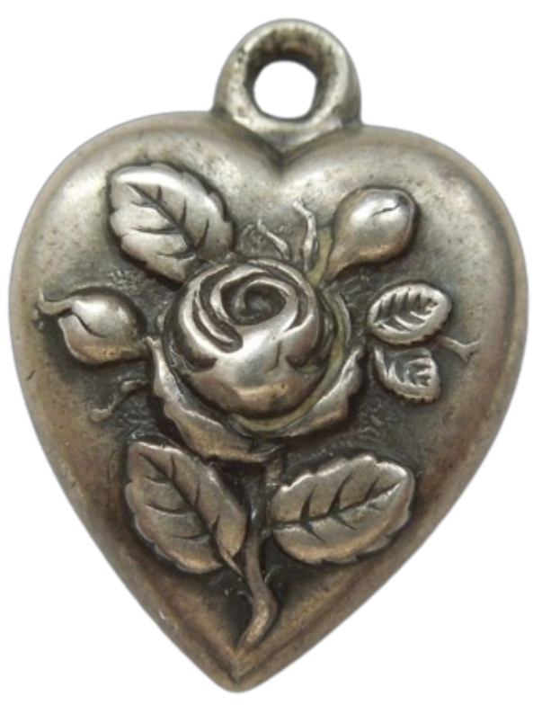

The Canticle of Rassvyet

Table of Contents
home page
or: return to
Rass' Bunker
.
short stories
Controversy's Importance to Society
Filth
haunt_this_house
divisionary movements: riddles in the form of posited truths
prelude to bus ride
hypothesis: whales are wiser in water than out
poetry
sex appeal
Love poem for apocalypse
moon man
FLY
some things never leave
you/me/we
manual/mirror-twixt
join gloved hands
fear street box office
shoreline shadow
chickadee choir practice
bike ride to the lakeside
longer works-in-progress
Ceux qui domptent le Boisvert
(or: The Taming of Boisvert)
The Ex Machina Effect
Riddles for Morticians
other places to find my writing
substack
tumblr
(largely contains the same as this page and substack, with additional blurbs from
boisvert
!)